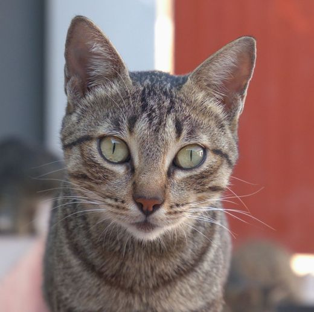
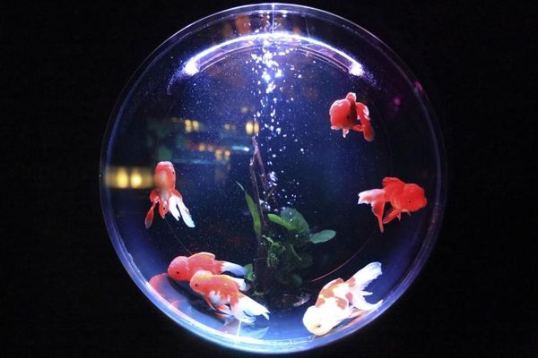

RaflarReyon reyon gezin, ihtiyacınızı listeye ekleyin
Mağazada dolaşır gibi: önce reyonu seçin, sonra raftaki etiketlere göz atın. Her etiket bir ürün grubunu anlatır ve seçerken nelere bakmanız gerektiğini söyler.
- Renkli bant reyonu gösterir: mor kedi, sarı köpek, nane kuş, mürdüm akvaryum, lila kasa önü.
- Fiyat yazmıyoruz; stok ve fiyat değişebildiği için en doğru bilgiyi mağaza WhatsApp'tan iletir.
- Listeye düğmesi ürünü alışveriş listenize ekler; liste bu tarayıcıda saklanır, siz gönderene kadar kimseye gitmez.
Kedi reyonuMama, kum, tırmalama, oyun
Kediler alışkanlıklarına bağlıdır: aynı mama, aynı kum, aynı köşe. Bu yüzden yeni bir ürüne geçerken acele etmemek, eskisinin adını ya da fotoğrafını yanınızda tutmak işinizi kolaylaştırır.
Mama ve beslenme
- Kedi
Kuru mama
Yavru, yetişkin, kısırlaştırılmış ve yaşlı kediler için farklı formüller.
Neye bakın: Kedinizin yaş dönemi ve varsa veteriner önerisi.
- Kedi
Yaş mama
Konserve ve pouch (poşet) mamalar; günlük sıvı alımına da katkı sağlar.
Neye bakın: Açılan konserveyi kapalı kapta buzdolabında saklayın, paketteki süreye uyun.
- Kedi
Ödül ve atıştırmalık
Krema kıvamında sıvı ödüller ve kıtır atıştırmalıklar.
Neye bakın: Ödüller günlük beslenmenin küçük bir kısmını geçmesin.
- Kedi
Malt ve tüy yumağı ürünleri
Yalanırken yutulan tüylerin atılmasına yardımcı olmak için kullanılan macunlar.
Neye bakın: Sık kusma ya da iştahsızlık varsa önce veteriner hekime danışın.
- Kedi
Takviyeler
Veteriner hekiminizin önerdiği takviyeyi sorun, bilgi verelim.
Neye bakın: Takviyeye kendi başınıza başlamayın; doz ve süreyi hekiminiz belirler.
- Kedi
Mama ve su kabı
Seramik, çelik ve yükseltilmiş kaplar.
Neye bakın: Bazı kediler suyu mama kabından uzakta içmeyi tercih eder.
- Kedi
Su pınarı
Akan suyu seven kediler için filtreli su kapları.
Neye bakın: Filtresini ve haznesini kılavuzdaki aralıklarla temizleyin.
Kum, bakım ve oyun
- Kedi
Kedi kumu
Topaklanan bentonit, silika ve bitkisel kökenli kum çeşitleri.
Neye bakın: Kediler kum değişimine hassas olabilir; yeni kumu eskisine karıştırarak geçin.
- Kedi
Kum kabı ve kürek
Açık ve kapalı kum kapları, kürekler, kum paspası.
Neye bakın: Kap, kedinizin boyunun yaklaşık bir buçuk katı olsun.
- Kedi
Tırmalama tahtası ve ağacı
Dikey direkler, yatay karton tırmalamalar, çok katlı ağaçlar.
Neye bakın: Mobilyayı tırmalıyorsa tahtayı tam o noktanın yanına koyun.
- Kedi
Oyuncak
Olta oyuncaklar, toplar, peluş fareler ve kedi otu içeren oyuncaklar.
Neye bakın: İp ve olta oyuncaklarını oyun bitince kaldırın; yutulabilir.
- Kedi
Tarak ve fırça
Kısa ve uzun tüylü kediler için tarak, fırça ve tüy toplama eldivenleri.
Neye bakın: Tüy dökümü dönemlerinde düzenli tarama tüy yumağını azaltır.
- Kedi
Tırnak makası
Kedilere uygun küçük tırnak makasları.
Neye bakın: Yalnız şeffaf ucu kesin; pembe kısma (damara) gelmeyin.
- Kedi
Taşıma çantası
Veteriner ziyareti ve yolculuk için sert ya da kumaş çantalar.
Neye bakın: Çantayı evde açık bırakın; kediniz içine alışsın.
- Kedi
Yatak ve minder
Yuva tipi yataklar, minderler ve battaniyeler.
Neye bakın: Kediler sıcak ve yüksek yerleri sever; yatağı sakin bir köşeye koyun.
Su içmeyi sevmeyen kediler
Evin farklı yerlerinde birden fazla su kabı, su pınarı ve öğünlerde yaş mama, günlük sıvı alımını artırmaya yardımcı olabilir.
Beklemeyin
Kediniz sık sık kum kabına gidip idrar yapamıyorsa, özellikle erkek kedilerde bu acil bir durumdur. Vakit kaybetmeden veteriner hekime başvurun.

Temsili görselKöpek reyonuMama, tasma, gezinti, bakım
Köpek alışverişinde en çok sorulan şey ölçü: mama tanesi ırk boyutuna, tasma boyuna ve göğse, yatak da uyuma şekline göre seçilir. Ölçülerinizi listeye not düşerseniz doğru ürüne daha hızlı ulaşırsınız.
Mama ve ödül
- Köpek
Kuru mama
Küçük, orta ve büyük ırklar; yavru, yetişkin ve yaşlı dönem formülleri.
Neye bakın: Irk boyutu tane büyüklüğünü ve içeriği etkiler; paketi buna göre seçin.
- Köpek
Yaş mama
Konserve ve pouch mamalar; tek başına ya da kuru mamaya ek olarak.
Neye bakın: Ek olarak veriyorsanız kuru mama miktarını dengeleyin.
- Köpek
Ödül maması
Eğitimde kullanılan küçük, yumuşak ödüller.
Neye bakın: Eğitim ödülleri bezelye boyunda olsun; günlük beslenmeye dahil edin.
- Köpek
Çiğneme ürünleri
Diş kaşıma dönemindeki yavrular ve çiğnemeyi seven köpekler için.
Neye bakın: Köpeğinizin boyutuna uygun olsun; yutulacak kadar küçülen parçayı alın.
- Köpek
Mama ve su kabı
Çelik ve seramik kaplar, yavaş yeme kapları, kaydırmaz altlıklar.
Neye bakın: Mamasını çok hızlı yiyen köpeklerde yavaş yeme kabı işe yarar.
Gezinti, bakım ve oyun
- Köpek
Boyun tasması
Ayarlanabilir boyun tasmaları.
Neye bakın: Tasma ile boyun arasına iki parmak sığmalı.
- Köpek
Göğüs tasması
Çeken ya da boynu hassas köpeklerde yükü göğse dağıtan tasmalar.
Neye bakın: Göğsün en geniş yerini, ön bacakların hemen arkasından ölçün.
- Köpek
Gezdirme kayışı
Sabit ve uzayabilir kayışlar, eğitim kayışları.
Neye bakın: Kalabalık caddede kısa ve sabit kayış daha kolay kontrol sağlar.
- Köpek
Künye
Tasmaya takılan isim ve telefon künyeleri.
Neye bakın: Künyedeki telefon numarası okunaklı ve güncel olsun.
- Köpek
Dışkı poşeti ve aparatı
Rulo poşetler ve kayışa takılan poşet hazneleri.
Neye bakın: Kayışa takılan hazne, poşetin hep yanınızda olmasını sağlar.
- Köpek
Çiş pedi
Yavru tuvalet eğitimi ve yaşlı köpekler için emici pedler.
Neye bakın: Pedi hep aynı yere serin; doğru kullanımı hemen ödüllendirin.
- Köpek
Şampuan ve bakım
Köpeklere özel şampuanlar, kulak ve pati bakım ürünleri.
Neye bakın: İnsan şampuanı yerine köpeklere uygun şampuan kullanın.
- Köpek
Tarak ve fırça
Tüy tipine göre fırça, tarak ve tüy alıcılar.
Neye bakın: Uzun tüylülerde düğümlenmeyi önlemek için sık tarayın.
- Köpek
Oyuncak
Toplar, halat oyuncaklar, içine ödül konan zekâ oyuncakları.
Neye bakın: Top, köpeğinizin yutamayacağı kadar büyük olsun.
- Köpek
Yatak ve minder
Farklı boyutlarda yatak, minder ve battaniyeler.
Neye bakın: Köpeğiniz yatağa rahatça uzanabilmeli; ölçüyü uyurken alın.
- Köpek
Taşıma çantası ve kafesi
Küçük ırklar için çantalar, yolculuk kafesleri.
Neye bakın: İçinde ayağa kalkıp rahatça dönebilmeli.
Tasma ölçüsü nasıl alınır?
- Boyun: Mezurayı boynun orta kısmından dolayın; tasma takılıyken araya iki parmak sığmalı.
- Göğüs: Ön bacakların hemen arkasından, göğüs kafesinin en geniş yerini ölçün.
- Yavrularda: Ölçü hızlı değişir; ayarlanabilir modeller iş görür, ölçüyü sık kontrol edin.
Yürüyüş çantası
Kayış ve künye, dışkı poşeti, gezi su kabı, birkaç ödül. Sıcak günlerde yürüyüşü serin saatlere almak ve asfaltın sıcaklığını elinizin tersiyle kontrol etmek patileri korur.
Kuş reyonuYem, kafes, tünek, destek
Muhabbet kuşu, kanarya ya da sultan papağanı: yem karışımı ve kafes ölçüsü türe göre değişir. Kuşunuzun türünü listeye yazarsanız raftaki seçenekleri ona göre ayırabiliriz.
Yem ve destek
- Kuş
Kuş yemi
Muhabbet kuşu, kanarya ve papağanlar için türüne göre karışımlar.
Neye bakın: Yem kabındaki kabuklar dolu sanılabilir; kabı her gün yenileyin.
- Kuş
Kraker ve ödül çubukları
Kafese asılan tohum çubukları ve krakerler.
Neye bakın: Ödül olarak verin; ana yemin yerini tutmaz.
- Kuş
Kalamar kemiği
Kafese takılan doğal kalsiyum kaynağı; gaga bakımına da yardımcı olur.
Neye bakın: Tünekten ulaşılan bir yere, yumuşak yüzü kuşa dönük takın.
- Kuş
Gaga taşı ve mineral blok
Gaga aşındırma ve mineral desteği için bloklar.
Neye bakın: Kafeste sabit dursun; ıslanıp dağılırsa yenileyin.
- Kuş
Vitamin
Veteriner hekiminizin önerdiği kuş vitaminlerini sorun, bilgi verelim.
Neye bakın: Suya katılan ürünlerde suyu her gün tazeleyin.
Kafes ve düzen
- Kuş
Kafes
Muhabbet kuşu, kanarya ve papağanlar için farklı boyutlarda kafesler.
Neye bakın: Kuş kanat açabilmeli; çubuk aralığı türüne uygun olmalı.
- Kuş
Tünek
Ahşap, doğal dal ve farklı kalınlıkta tünekler.
Neye bakın: Farklı kalınlıkta tünekler ayak sağlığına iyi gelir.
- Kuş
Yemlik ve suluk
Kafese takılan yemlik ve suluklar.
Neye bakın: Tüneğin hemen altına koymayın; dışkı karışmasın.
- Kuş
Kuş oyuncağı
Salıncak, merdiven, zil ve çiğneme oyuncakları.
Neye bakın: Oyuncakları ara ara değiştirin; kuşunuz sıkılmasın.
- Kuş
Kafes tabanı kumu ve kâğıdı
Kafes tabanına serilen kum ve kâğıtlar.
Neye bakın: Tabanı sık değiştirmek dışkıyı gözlemeyi de kolaylaştırır.
- Kuş
Banyo kabı
Kafese takılan banyo kapları.
Neye bakın: Oda sıcaklığında su koyun; cereyansız bir saatte verin.
- Kuş
Kafes örtüsü
Gece kafesi örtmek için kumaş örtüler.
Neye bakın: Hava alacak şekilde örtün.
Kafes nereye konur?
Cereyan almayan, doğrudan güneş görmeyen, insanların gün içinde bulunduğu sakin bir köşe idealdir. Kafesin bir kenarının duvara yakın olması kuşa güven verir.
Mutfak dumanına dikkat
Aşırı ısınan yapışmaz tava kaplamalarından çıkan duman kuşlar için öldürücü olabilir. Kafesi mutfaktan uzak tutun; oda spreylerini kuşun yakınında kullanmayın.
Akvaryum reyonuKurulum, su bakımı, yem
Akvaryumda asıl bakılan şey sudur. Doğru filtre, şebeke suyu için su düzenleyici ve düzenli küçük su değişimleri, balıkların sağlığının temelidir. Hacmi ve balık türünü yazarsanız ihtiyaç listesini birlikte tamamlarız.
Kurulum
- Akvaryum
Akvaryum
Farklı hacimlerde cam akvaryumlar ve setler.
Neye bakın: Japon balıkları büyür; fanus yerine filtreli, geniş bir akvaryum seçin.
- Akvaryum
Filtre ve hava motoru
İç, dış ve askı filtreler; hava motorları ve hortumlar.
Neye bakın: Filtre kapasitesi akvaryum hacmine uygun olsun.
- Akvaryum
Isıtıcı ve termometre
Tropikal balıklar için ayarlanabilir ısıtıcılar.
Neye bakın: Japon balığı gibi soğuk su türleri genelde ısıtıcı istemez; türünü sorun.
- Akvaryum
Aydınlatma
Akvaryum lambaları; canlı bitkiler için uygun ışıklar.
Neye bakın: Işık gün boyu açık kalırsa yosun artar; belli saatlerde yakın.
- Akvaryum
Kum ve çakıl
Farklı renk ve tane boyunda zemin malzemeleri.
Neye bakın: Akvaryuma koymadan önce iyice yıkayın.
- Akvaryum
Bitki ve dekor
Canlı ve yapay bitkiler, kökler, taşlar ve süsler.
Neye bakın: Keskin kenarlı dekor uzun yüzgeçli balıklara zarar verebilir.
Bakım ve yem
- Akvaryum
Su düzenleyici
Şebeke suyundaki klor ve kloramini akvaryuma girmeden nötrlemek için.
Neye bakın: Akvaryum hacminize göre kullanım miktarını etiketten okuyun.
- Akvaryum
Balık yemi
Pul, granül ve tablet yemler; yüzeyde, ortada ya da dipte beslenen türlere göre.
Neye bakın: Az ve sık verin; yenmeyen yem suyu bozar.
- Akvaryum
Su test kiti
pH, amonyak, nitrit ve nitrat testleri.
Neye bakın: Yeni kurulan akvaryumda testleri sık yapın.
- Akvaryum
Sifon ve temizlik
Dip temizleme sifonları, cam silecekleri, mıknatıslı temizleyiciler.
Neye bakın: Akvaryum kovasını başka işte kullanmayın; deterjan kalıntısı zarar verir.
- Akvaryum
Kepçe
Farklı boylarda balık kepçeleri.
Neye bakın: Her akvaryuma ayrı kepçe, hastalık taşınmasını azaltır.
Yeni akvaryum sabır ister
- Yararlı bakterilerin filtreye yerleşmesi birkaç hafta sürebilir; amonyak ve nitriti testle izleyin.
- Balıkları bir anda değil, kademeli ekleyin.
- Suyun tamamını değil, düzenli olarak küçük bir kısmını değiştirin.
- Filtre süngerini musluk suyuyla değil, akvaryumdan aldığınız suyla çalkalayın.

Temsili görsel Temsili görsel
Temsili görselKasa önü rafıKüçük ama unutulmayanlar
Eve dönünce "keşke onu da alsaydım" dedirtenler: tüy rulosu, ıslak mendil, dışkı poşeti. Bu rafı her listeye bir göz atmak için koyduk.
Unutulmasın
- Kasa önü
Tüy toplama rulosu
Kıyafet ve koltuklar için yapışkanlı rulolar.
Neye bakın: Yedek rulosunu da listeye yazın.
- Kasa önü
Islak mendil
Evcil hayvanlara uygun pati ve tüy temizleme mendilleri.
Neye bakın: Gezinti dönüşü patiler için kapı yanında bulundurun.
- Kasa önü
Ödül çantası
Belde ya da kayışta taşınan ödül keseleri.
Neye bakın: Eğitimde ödülü anında vermek işi kolaylaştırır.
- Kasa önü
Gezi su kabı
Katlanır kaplar ve kapaklı gezi suluğu.
Neye bakın: Sıcak günlerde yürüyüşe su almadan çıkmayın.
- Kasa önü
Künye
Kedi ve köpek tasmalarına takılan künyeler.
Neye bakın: Telefon numarası okunaklı ve güncel olsun.
- Kasa önü
Dışkı poşeti
Rulo poşetler ve yedek paketler.
Neye bakın: Kayışa takılan hazneyle birlikte kullanın.
Aradığınız rafta yok mu?
Bu sayfadaki etiketler bir pet shopta genellikle bulunan ürün gruplarıdır. Aklınızdaki ürün burada yoksa adını ya da fotoğrafını gönderin; stok ya da temin durumu hakkında bilgi verelim.
Listeniz hazır mı?
Listenizde şu an: boş. Liste sayfasında yaş dönemi, ırk boyutu ve adet ekleyip mesajı tek dokunuşla gönderebilirsiniz.